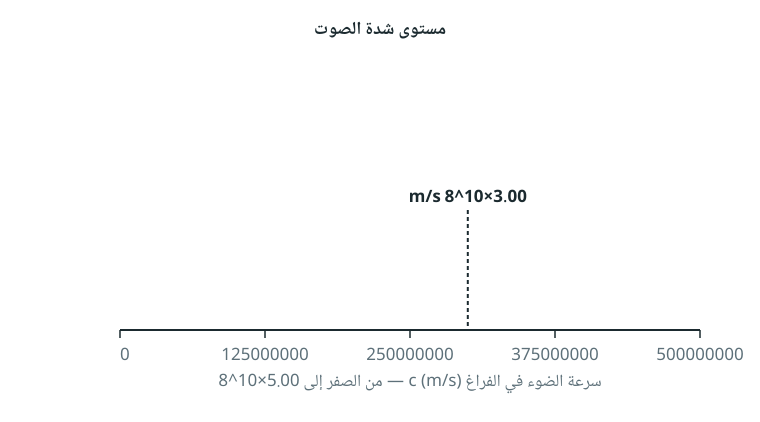

مستوى شدة الصوت
Sound intensity level
مستوى شدة الصوت مقياس لوغاريتمي لشدة الصوت بالنسبة إلى شدة مرجعية هي 10⁻¹² W/m²، ووحدته الديسيبل، فكل زيادة 10 dB تعني مضاعفة الشدة عشرة أضعاف.
الأذن البشرية تستجيب للصوت استجابة لوغاريتمية لا خطية: الشدة التي تُحسّ مضاعفةً للحسّ تحتاج عشرة أضعاف الشدة الفيزيائية. ولهذا يُقاس الصوت بمستوى لوغاريتمي: L = 10·log₁₀(I/I₀)، حيث I شدة الصوت بوحدة W/m² وI₀ = 10⁻¹² W/m² الشدة المرجعية الموافقة لعتبة السمع عند 1 kHz. وكل زيادة 10 dB تعني شدة أكبر عشرة أضعاف، وزيادة 3 dB تعني شدة مضاعفة. مثال: همس بشدة 10⁻¹⁰ W/m² له مستوى 10·log₁₀(10⁻¹⁰/10⁻¹²) = 20 dB، وحديث عادي بشدة 10⁻⁶ W/m² له 60 dB، وألم عند 1 W/m² له 120 dB.
كيف تعمل الظاهرة؟
الأذن تحوّل ضغط الصوت إلى إشارة عصبية عبر خلايا شعرية في القوقعة، واستجابتها لوغاريتمية لأن مدى الشدة الذي تتحمله هائل: من 10⁻¹² W/m² عند عتبة السمع إلى 1 W/m² عند عتبة الألم، أي اثنا عشر مرتبة عشرية. ولو كان الحسّ خطياً، لكانت الأصوات الخفيفة غير مسموعة والأصوات العالية مؤلمة فوراً. واللوغاريتم يضغط هذا المدى في مقياس عملي من 0 إلى 120 dB. وهذا ليس اختياراً اصطلاحياً فقط، بل يعكس آلية الترميز في الأذن الداخلية، حيث يتناسب معدل إطلاق العصب مع لوغاريتم الشدة تقريباً.
العلاقة بالأرقام
L = 10·log₁₀(I/I₀)، وI = I₀·10^(L/10). ولجمع مصادر: L_total = 10·log₁₀(Σ10^(L_i/10)). ولضغط الصوت: L_p = 20·log₁₀(p/p₀) بـp₀ = 20 µPa. مثال عددي: مصدران 60 dB → Σ10^6 = 2×10⁶ → L = 10·log₁₀(2×10⁶) = 63.01 dB. وثلاثة مصادر 60 dB → 10·log₁₀(3×10⁶) = 64.77 dB. وعشرة مصادر → 70.0 dB.
مفاهيم متقاربة
يُفرَّق بين مستوى الشدة ومستوى الضغط: في الهواء في موجة مستوية L_I = L_p، لكن في حقل قريب أو في أنبوب مغلق يختلفان لأن العلاقة بين الضغط والشدة تعتمد على المعاوقة الصوتية. ويُفرَّق بين الديسيبل والديسيبل الموزون: dB(A) مقياس موزون يحاكي حساسية الأذن ويُستعمل في قياسات الضوضاء، وdB الخطي يقيس الطاقة الفيزيائية. ويُفرَّق بين الشدة والقدرة الصوتية: الشدة لكل مساحة (W/m²)، والقدرة الصوتية الكلية (W). وأخيراً يُفرَّق بين المستوى الفيزيائي والإحساس بالعلوّ: العلوّ إحساس نفسي يتبع مقياساً آخر (الفون) لا الديسيبل.
حدود التطبيق
المقياس اللوغاريتمي يفقد معناه عند الشدة صفر، حيث يؤول المستوى إلى سالب اللانهاية. ولا تصف الديسيبلات الخطية الإحساس الفعلي بالعلوّ، لأن حساسية الأذن تختلف بالتردد اختلافاً كبيراً، ولهذا تُستعمل المقاييس الموزونة. ولا تصح المقارنة بين مستويين مقيسين في ظروف مختلفة بلا تحديد المسافة والوسط والتردد. وأخيراً في الأصوات النبضية أو ذات الطيف الواسع لا يكفي مستوى واحد لوصف الأثر، وتُستعمل مقاييس إحصائية كـL_eq وL_max.

| الكمية | القيمة | المصدر |
|---|---|---|
| الشدة المرجعية I₀ | 10⁻¹² W/m² | [2] |
| المستوى الكلي لمصدرين كل منهما 60 dB | 63.0 dB | [3] |
المصادر
- 1 CODATA Value: speed of light in vacuum — NIST — CODATA 2022 recommended values (2024). physics.nist.gov/cgi-bin/cuu/Value?c · اطُّلع عليه 2026-11-21
- 2 The International System of Units (SI), 9th edition (2019) — BIPM — Bureau International des Poids et Mesures (2019). www.bipm.org/en/publications/si-brochure · اطُّلع عليه 2026-11-21
- 3 CODATA Value: Boltzmann constant — NIST — CODATA 2022 recommended values (2024). physics.nist.gov/cgi-bin/cuu/Value?k · اطُّلع عليه 2026-11-21
استشهد بهذا المصطلح
الصيغتان مبنيتان من بيانات الصفحة نفسها: العنوان والتاريخ ورابط النسخة المنشورة.
مستوى شدة الصوت — Sound intensity level. (2026). ديوان المعرفة — انفراد. https://infiradev.com/diwan/terms/term-sound-intensity-level.html
@misc{term-sound-intensity-level2026,
title = {مستوى شدة الصوت},
titleaddon = {Sound intensity level},
howpublished = {{ديوان المعرفة — انفراد} — مرجع علمي عربي},
year = {2026},
url = {https://infiradev.com/diwan/terms/term-sound-intensity-level.html},
urldate = {2026-11-26},
note = {مراجعة علمية: hermes (مراجعة معتمدة 2026-11-26)}
}
راجعه: hermes (مراجعة معتمدة 2026-11-26) · 2026-11-26 · آخر تحديث 2026-11-21